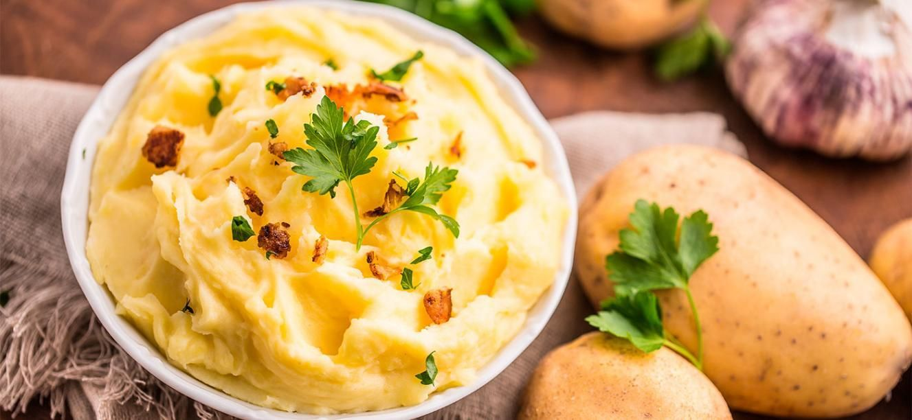
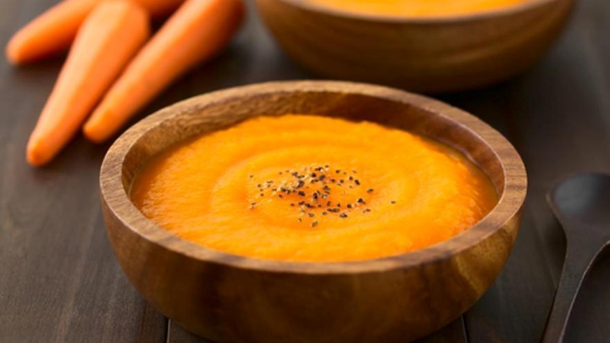
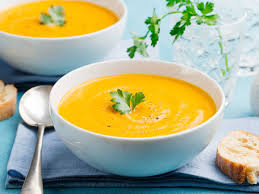
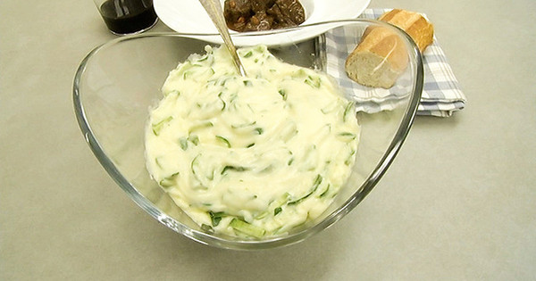
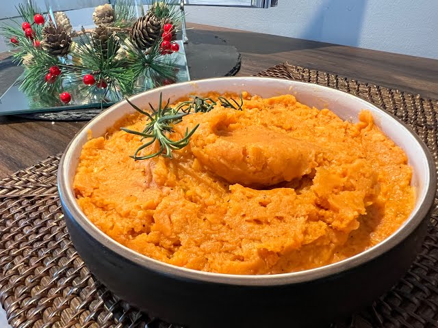

Seleccionar categoría
▼


El acompañamiento clásico por excelencia, preparado con un toque artesanal. Conservamos parte de su piel para brindarte una textura auténtica y un mayor aporte de fibra natural
Hervir las papas 20 min, triturar con piel para textura rústica y mezclar con lácteos.
Aporta energía rápida, potasio para los músculos y es de fácil digestión.

Una opción vibrante y fresca que rompe con lo tradicional. Su color verde intenso refleja su alto contenido nutricional, ofreciendo un sabor ligeramente dulce y una cremosidad sorprendente
Cocer los guisantes 8 min, licuar con un toque de menta y mantequilla hasta que esté cremoso.
Alto en proteína vegetal, fibra para la digestión y rico en vitamina C.

Delicadamente dulce y lleno de vitalidad. Este puré es la combinación perfecta entre suavidad y salud, ideal para equilibrar platos intensos con un toque de color y ligereza.
Hervir zanahorias hasta que estén suaves y procesar con aceite de oliva.
Excelente para la vista (Vitamina A) y mejora la salud de la piel.

Aterciopelado y reconfortante, este puré destaca por su ligereza. Es una opción baja en calorías pero con un sabor profundo que evoca la cocina de hogar en su versión más saludable.
Hornear o hervir la calabaza, retirar la pulpa y mezclar con nuez moscada.
Bajo en calorías, rico en antioxidantes y refuerza el sistema inmune.

La opción más ligera e hidratante de nuestra selección. Con una textura suave y un sabor sutil, es el aliado perfecto para quienes buscan una cena nutritiva sin sentirse pesados
Saltear calabacín con cebolla y triturar. Es un puré muy ligero y acuoso.
Altamente hidratante, diurético natural y muy bajo en carbohidratos.

Una fuente de energía natural con un carácter rústico. Su dulzor característico y textura densa lo convierten en el acompañamiento favorito para quienes necesitan un extra de vitalidad en su día
Hervir camote naranja, triturar y añadir canela para resaltar su dulzor natural.
Energía de larga duración, rico en betacarotenos y ayuda a la salud del corazón.